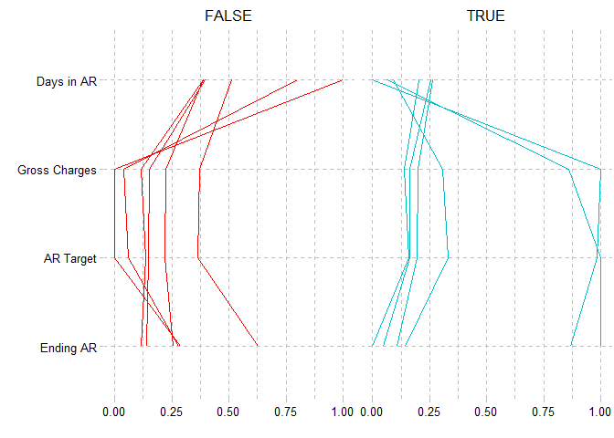
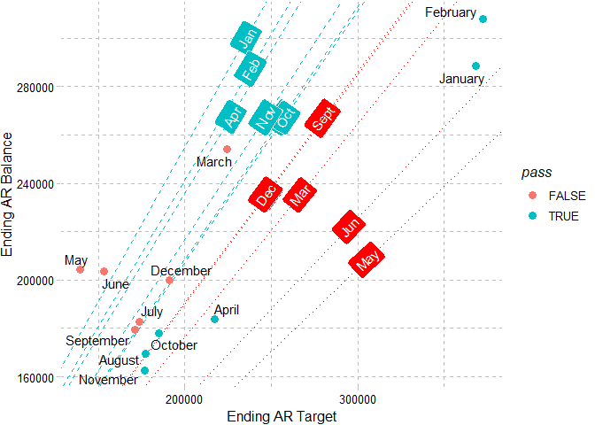
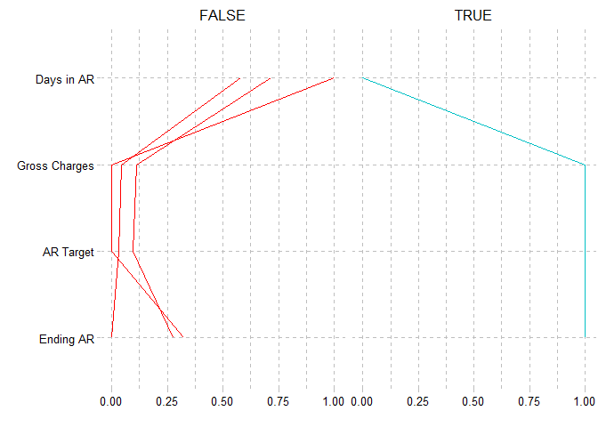

Forager (noun)
A person that goes from place to place searching for things that they can eat or use.1
Ager (noun)
A person that calls from place to place searching for payment before insurance can refuse.2
The goal of {forager} is to provide a suite of tools for the analysis of common healthcare revenue cycle management Key Performance Indicators (KPIs).
Installation
You can install the development version of forager from GitHub with:
# install.packages("devtools")
devtools::install_github("andrewallenbruce/forager")Aging Calculation
date_ex <- tibble::tibble(
dos = as.POSIXct(
c(
"2022-02-10", "2022-02-09", "2022-02-08", "2022-02-08", "2022-02-07",
"2022-02-07", "2022-02-05", "2022-02-05", "2022-02-02", "2022-02-02",
"2022-02-02", "2022-02-01", "2022-02-01", "2022-02-01", "2022-01-31",
"2022-01-30", "2022-01-30", "2022-01-29", "2022-01-29", "2022-01-28",
"2022-01-28", "2022-01-28", "2022-01-21", "2022-01-21", "2022-01-20",
"2022-01-20", "2022-01-20", "2022-01-08", "2022-01-07", "2021-12-31",
"2021-12-31", "2021-12-31", "2021-12-31", "2021-12-31", "2021-12-27",
"2021-12-27", "2021-12-26", "2021-12-26", "2021-12-25", "2021-12-25",
"2021-12-25", "2021-12-25", "2021-12-25", "2021-12-25", "2021-12-19",
"2021-12-18", "2021-12-08", "2021-11-27", "2021-11-20", "2021-11-20",
"2021-11-19", "2021-11-19"
),
tz = "UTC"
),
dor = as.POSIXct(
c(
"2022-02-28", "2022-02-10", "2022-02-10", "2022-02-10", "2022-02-10",
"2022-02-01", "2022-02-01", "2022-02-01", "2022-02-01", "2022-02-01",
"2022-02-01", "2022-02-01", "2022-02-01", "2022-02-01", "2021-01-21",
"2022-01-18", "2022-01-18", "2022-01-18", "2022-01-18", "2022-01-18",
"2022-01-18", "2022-01-18", "2022-01-18", "2022-01-21", "2022-01-18",
"2021-12-28", "2022-01-18", "2022-01-21", "2022-01-18", "2022-01-18",
"2022-02-01", "2022-02-01", "2021-12-11", "2022-01-31", "2022-01-31",
"2022-01-31", "2022-01-28", "2022-01-28", "2022-01-28", "2022-01-28",
"2022-01-28", "2022-01-28", "2022-01-31", "2022-01-31", "2022-01-31",
"2022-01-31", "2022-01-31", "2022-01-31", "2022-01-31", "2022-01-31",
"2022-01-31", "2022-01-31"
),
tz = "UTC"
),
)
Calculate the number of days between the Date of Service (DOS) and today’s date:
date_ex |>
dplyr::select(dos) |>
dplyr::mutate(today = lubridate::today()) |>
forager::age_days(dos, today) |>
dplyr::arrange(desc(age))
#> # A tibble: 52 × 3
#> dos today age
#> <dttm> <date> <dbl>
#> 1 2021-11-19 00:00:00 2022-09-06 293
#> 2 2021-11-19 00:00:00 2022-09-06 293
#> 3 2021-11-20 00:00:00 2022-09-06 292
#> 4 2021-11-20 00:00:00 2022-09-06 292
#> 5 2021-11-27 00:00:00 2022-09-06 285
#> 6 2021-12-08 00:00:00 2022-09-06 274
#> 7 2021-12-18 00:00:00 2022-09-06 264
#> 8 2021-12-19 00:00:00 2022-09-06 263
#> 9 2021-12-25 00:00:00 2022-09-06 257
#> 10 2021-12-25 00:00:00 2022-09-06 257
#> # … with 42 more rows
Calculate the number of days between the Date of Service (DOS) and the Date of Release (DOR):
date_ex |>
dplyr::select(dos, dor) |>
dplyr::filter(!is.na(dor)) |>
forager::age_days(dos, dor) |>
dplyr::arrange(desc(age))
#> # A tibble: 52 × 3
#> dos dor age
#> <dttm> <dttm> <dbl>
#> 1 2021-11-19 00:00:00 2022-01-31 00:00:00 74
#> 2 2021-11-19 00:00:00 2022-01-31 00:00:00 74
#> 3 2021-11-20 00:00:00 2022-01-31 00:00:00 73
#> 4 2021-11-20 00:00:00 2022-01-31 00:00:00 73
#> 5 2021-11-27 00:00:00 2022-01-31 00:00:00 66
#> 6 2021-12-08 00:00:00 2022-01-31 00:00:00 55
#> 7 2021-12-18 00:00:00 2022-01-31 00:00:00 45
#> 8 2021-12-19 00:00:00 2022-01-31 00:00:00 44
#> 9 2021-12-25 00:00:00 2022-01-31 00:00:00 38
#> 10 2021-12-25 00:00:00 2022-01-31 00:00:00 38
#> # … with 42 more rowsDays in AR Monthly Calculation
The following is a basic example of a monthly Days in AR calculation:
# Example data frame
dar_mon_ex <- data.frame(
date = as.Date(c(
"2022-01-01", "2022-02-01", "2022-03-01",
"2022-04-01", "2022-05-01", "2022-06-01",
"2022-07-01", "2022-08-01", "2022-09-01",
"2022-10-01", "2022-11-01", "2022-12-01")),
gct = c(
325982.23, 297731.74, 198655.14,
186047.56, 123654.34, 131440.28,
153991.95, 156975.52, 146878.12,
163799.44, 151410.74, 169094.46),
earb = c(
288432.52, 307871.08, 253976.56,
183684.92, 204227.59, 203460.47,
182771.32, 169633.64, 179347.72,
178051.11, 162757.49, 199849.32))
dar_mon_ex |>
knitr::kable(col.names = c("Month",
"Gross Charges",
"Ending AR Balance"))| Month | Gross Charges | Ending AR Balance |
|---|---|---|
| 2022-01-01 | 325982.2 | 288432.5 |
| 2022-02-01 | 297731.7 | 307871.1 |
| 2022-03-01 | 198655.1 | 253976.6 |
| 2022-04-01 | 186047.6 | 183684.9 |
| 2022-05-01 | 123654.3 | 204227.6 |
| 2022-06-01 | 131440.3 | 203460.5 |
| 2022-07-01 | 153992.0 | 182771.3 |
| 2022-08-01 | 156975.5 | 169633.6 |
| 2022-09-01 | 146878.1 | 179347.7 |
| 2022-10-01 | 163799.4 | 178051.1 |
| 2022-11-01 | 151410.7 | 162757.5 |
| 2022-12-01 | 169094.5 | 199849.3 |
Using the dar_month() function, we set the Days in AR target (dart) to 35 and calculate:
dar_month_2022 <- dar_mon_ex |> forager::dar_month(date, gct, earb, 35)| Month | Gross Charges | Ending AR | Target AR | Days in AR | Pass |
|---|---|---|---|---|---|
| January | 325982.2 | 288432.5 | 368044.5 | 27.43 | TRUE |
| February | 297731.7 | 307871.1 | 372164.7 | 28.95 | TRUE |
| March | 198655.1 | 253976.6 | 224288.1 | 39.63 | FALSE |
| April | 186047.6 | 183684.9 | 217055.5 | 29.62 | TRUE |
| May | 123654.3 | 204227.6 | 139609.7 | 51.20 | FALSE |
| June | 131440.3 | 203460.5 | 153347.0 | 46.44 | FALSE |
| July | 153992.0 | 182771.3 | 173861.9 | 36.79 | FALSE |
| August | 156975.5 | 169633.6 | 177230.4 | 33.50 | TRUE |
| September | 146878.1 | 179347.7 | 171357.8 | 36.63 | FALSE |
| October | 163799.4 | 178051.1 | 184934.9 | 33.70 | TRUE |
| November | 151410.7 | 162757.5 | 176645.9 | 32.25 | TRUE |
| December | 169094.5 | 199849.3 | 190913.1 | 36.64 | FALSE |
Presentation Examples
Click to View Code for Table
gt_1 <- dar_month_2022 |>
dplyr::select(month, gct, earb, earb_trg, dar, pass) |>
headliner::add_headline_column(x = earb, y = earb_trg,
headline = "{delta_p}% {trend} than Target",
trend_phrases = headliner::trend_terms(more = "HIGHER", less = "Lower"), n_decimal = 0) |>
gt::gt(rowname_col = "month") |>
gt::cols_label(gct = "Gross Charges",
earb = "Ending AR",
earb_trg = "Target AR",
dar = "Days in AR",
pass = "Pass",
headline = "Ending AR Trend") |>
gt::tab_row_group(label = "Q4", rows = c(10:12)) |>
gt::tab_row_group(label = "Q3", rows = c(7:9)) |>
gt::tab_row_group(label = "Q2", rows = c(4:6)) |>
gt::tab_row_group(label = "Q1", rows = c(1:3)) |>
gt::fmt_number(columns = dar) |>
gt::fmt_currency(columns = c(gct, earb, earb_trg)) |>
gt::tab_style(style = gt::cell_text(font = c(gt::google_font(name = "IBM Plex Mono"),
gt::default_fonts())), locations = gt::cells_body(columns = c(gct, earb, earb_trg, dar))) |>
gt::opt_stylize(style = 6, color = "cyan") |>
gt::tab_header(
title = gt::md("Example **Days in AR Analysis** with the **{forager}** Package"),
subtitle = gt::md("**May** saw the *highest* Days in AR of 2022 *(51.2)*. This coincided with the largest <br> month-to-month increase in AR & highest percentage over the AR Target *(46%)*.")) |>
gt::opt_all_caps() |>
gt::grand_summary_rows(
columns = c(gct, earb, earb_trg, dar),
fns = list(Mean = ~mean(., na.rm = TRUE), Median = ~median(., na.rm = TRUE))) |>
gt::opt_table_font(font = list(gt::google_font(name = "Roboto"))) |>
gt::opt_align_table_header(align = "left")
#gt_1 |> gt::gtsave("gt_1.png", expand = 20)
Click to View Code for Table
dar_month_2022
#> date month nmon ndip gct earb earb_trg earb_dc earb_pct
#> 1 2022-01-01 January 1 31 325982.2 288432.5 368044.5 -79611.93 -27.60
#> 2 2022-02-01 February 2 28 297731.7 307871.1 372164.7 -64293.60 -20.88
#> 3 2022-03-01 March 3 31 198655.1 253976.6 224288.1 29688.50 11.69
#> 4 2022-04-01 April 4 30 186047.6 183684.9 217055.5 -33370.57 -18.17
#> 5 2022-05-01 May 5 31 123654.3 204227.6 139609.7 64617.85 31.64
#> 6 2022-06-01 June 6 30 131440.3 203460.5 153347.0 50113.48 24.63
#> 7 2022-07-01 July 7 31 153992.0 182771.3 173861.9 8909.44 4.87
#> 8 2022-08-01 August 8 31 156975.5 169633.6 177230.4 -7596.79 -4.48
#> 9 2022-09-01 September 9 30 146878.1 179347.7 171357.8 7989.91 4.45
#> 10 2022-10-01 October 10 31 163799.4 178051.1 184934.9 -6883.74 -3.87
#> 11 2022-11-01 November 11 30 151410.7 162757.5 176645.9 -13888.37 -8.53
#> 12 2022-12-01 December 12 31 169094.5 199849.3 190913.1 8936.22 4.47
#> adc dar pass actual ideal radiff
#> 1 10515.56 27.43 TRUE 0.88 1.13 -0.25
#> 2 10633.28 28.95 TRUE 1.03 1.25 -0.22
#> 3 6408.23 39.63 FALSE 1.28 1.13 0.15
#> 4 6201.59 29.62 TRUE 0.99 1.17 -0.18
#> 5 3988.85 51.20 FALSE 1.65 1.13 0.52
#> 6 4381.34 46.44 FALSE 1.55 1.17 0.38
#> 7 4967.48 36.79 FALSE 1.19 1.13 0.06
#> 8 5063.73 33.50 TRUE 1.08 1.13 -0.05
#> 9 4895.94 36.63 FALSE 1.22 1.17 0.05
#> 10 5283.85 33.70 TRUE 1.09 1.13 -0.04
#> 11 5047.02 32.25 TRUE 1.07 1.17 -0.10
#> 12 5454.66 36.64 FALSE 1.18 1.13 0.05
# Create df for gt_plt_bar_stack
dar_month_2022_pct <- dar_month_2022 |>
dplyr::mutate(gct_pct = (gct / (gct + earb) * 100),
earb_pct = (earb / (gct + earb) * 100)) |>
dplyr::select(month, gct_pct, earb_pct) |>
tidyr::pivot_longer(-month, names_to = "measure", values_to = "percentage") |>
dplyr::group_by(month) |>
dplyr::summarize(list_data = list(percentage))
# Right join the two data frames
dar_month_2022_join <- dplyr::right_join(dar_month_2022,
dar_month_2022_pct,
by = "month")
# Create new copy cols for gt_plt_bullet
dar_month_2022_gt <- dar_month_2022_join |>
dplyr::select(month,
gct,
earb,
earb_trg,
dar,
pass,
list_data) |>
dplyr::mutate(target_col = earb,
plot_col = earb_trg)
# Create gt table
gt_2 <- dar_month_2022_gt |>
gt::gt(rowname_col = "month") |>
gt::cols_label(
#month = "Month",
gct = "Gross Charges",
earb = "Ending AR",
earb_trg = "Optimal AR",
dar = "Days in AR",
pass = "Pass",
plot_col = "Optimal AR Threshold") |>
gt::tab_row_group(label = "Q4", rows = c(10:12)) |>
gt::tab_row_group(label = "Q3", rows = c(7:9)) |>
gt::tab_row_group(label = "Q2", rows = c(4:6)) |>
gt::tab_row_group(label = "Q1", rows = c(1:3)) |>
#gt::tab_options(row_group.as_column = TRUE) |>
gtExtras::gt_theme_espn() |>
gt::fmt_number(columns = dar) |>
gt::fmt_currency(columns = c(gct, earb, earb_trg)) |>
#gtExtras::gt_plt_dot(dar, month, palette = c("#2c3e50", "#8ca0aa")) |>
gtExtras::gt_plt_bullet(column = plot_col, target = target_col, palette = c("#8ca0aa", "black"), width = 65) |>
gtExtras::gt_plt_bar_stack(list_data, width = 50, labels = c("Charges (%) ", " AR (%)"), palette = c("#2c3e50", "#8ca0aa")) |>
gtExtras::gt_badge(pass, palette = c("FALSE" = "#8ca0aa")) |>
gt::tab_style(style = gt::cell_text(color = "#2c3e50", weight = "bolder"), locations = gt::cells_body(columns = pass, rows = pass == "FALSE")) |>
gt::tab_style(style = gt::cell_text(color = "#8ca0aa", weight = "normal"), locations = gt::cells_body(columns = pass, rows = pass == "TRUE")) |>
gt::data_color(columns = c(gct, earb, dar), colors = scales::col_numeric(palette = c("#2c3e50", "#8ca0aa") |> as.character(), domain = NULL)) |>
gt::tab_footnote(footnote = "Horizontal bar indicates Optimal AR, vertical bar is Actual.", locations = gt::cells_column_labels(columns = plot_col)) |>
gt::tab_header(title = gt::md("Example **Days in AR Analysis** with the **{forager}** Package"))
#gt_2 |> gt::gtsave("gt_2.png", expand = 20)
library(GGally)
#> Loading required package: ggplot2
#> Registered S3 method overwritten by 'GGally':
#> method from
#> +.gg ggplot2
dar_month_2022 |>
dplyr::select("Ending AR" = earb,
"AR Target" = earb_trg,
"Gross Charges" = gct,
"Days in AR" = dar,
pass) |>
ggparcoord(columns = 1:4,
scale = "uniminmax",
#scale = "globalminmax",
groupColumn = "pass") +
ggplot2::scale_color_manual(values = c("red", "#00BFC4")) +
ggplot2::xlab("") +
ggplot2::ylab("") +
ggplot2::coord_flip() +
ggplot2::facet_wrap("pass") +
ggthemes::theme_pander() +
ggplot2::theme(legend.position = "none")
ndip_31 <- dar_month_2022 |> dplyr::select(ndip, ideal) |> dplyr::filter(ndip == 31)
ndip_31 <- ndip_31$ideal[[1]]
darmon2 <- dar_month_2022 |> dplyr::mutate(trg_abline = earb_trg / earb)
trg_month <- darmon2 |> dplyr::select(month, trg_abline)
jan <- trg_month$trg_abline[[1]]
feb <- trg_month$trg_abline[[2]]
mar <- trg_month$trg_abline[[3]]
apr <- trg_month$trg_abline[[4]]
may <- trg_month$trg_abline[[5]]
jun <- trg_month$trg_abline[[6]]
jul <- trg_month$trg_abline[[7]]
aug <- trg_month$trg_abline[[8]]
sep <- trg_month$trg_abline[[9]]
oct <- trg_month$trg_abline[[10]]
nov <- trg_month$trg_abline[[11]]
dec <- trg_month$trg_abline[[12]]
options(scipen = 999)
library(ggplot2)
library(geomtextpath)
ggplot(data = darmon2) +
geomtextpath::geom_labelabline(
slope = jan,
intercept = 0,
label = "Jan",
linetype = 2,
colour = "#00BFC4",
fill = "#00BFC4",
boxcolour = "white",
textcolour = "white",
hjust = 0.9,
vjust = 0.5) +
geomtextpath::geom_labelabline(
slope = feb,
intercept = 0,
label = "Feb",
linetype = 2,
colour = "#00BFC4",
fill = "#00BFC4",
boxcolour = "white",
textcolour = "white",
hjust = 0.825,
vjust = 0.5) +
geomtextpath::geom_labelabline(
slope = mar,
intercept = 0,
label = "Mar",
linetype = 3,
colour = "red",
fill = "red",
boxcolour = "white",
textcolour = "white",
hjust = 0.5,
vjust = 0.5) +
geomtextpath::geom_labelabline(
slope = apr,
intercept = 0,
label = "Apr",
linetype = 2,
colour = "#00BFC4",
fill = "#00BFC4",
boxcolour = "white",
textcolour = "white",
hjust = 0.7,
vjust = 0.5) +
geomtextpath::geom_labelabline(
slope = may,
intercept = 0,
label = "May",
linetype = 3,
colour = "red",
fill = "red",
boxcolour = "white",
textcolour = "white",
hjust = 0.5,
vjust = 0.5) +
geomtextpath::geom_labelabline(
slope = jun,
intercept = 0,
label = "Jun",
linetype = 3,
colour = "red",
fill = "red",
boxcolour = "white",
textcolour = "white",
hjust = 0.5,
vjust = 0.5) +
geomtextpath::geom_labelabline(
slope = jul,
intercept = 0,
label = "Jul",
linetype = 3,
colour = "red",
fill = "red",
boxcolour = "white",
textcolour = "white",
hjust = 0.5,
vjust = 0.5) +
geomtextpath::geom_labelabline(
slope = aug,
intercept = 0,
label = "Aug",
linetype = 2,
colour = "#00BFC4",
fill = "#00BFC4",
boxcolour = "white",
textcolour = "white",
hjust = 0.7,
vjust = 0.5) +
geomtextpath::geom_labelabline(
slope = sep,
intercept = 0,
label = "Sept",
linetype = 3,
colour = "red",
fill = "red",
boxcolour = "white",
textcolour = "white",
hjust = 0.7,
vjust = 0.5) +
geomtextpath::geom_labelabline(
slope = oct,
intercept = 0,
label = "Oct",
linetype = 2,
colour = "#00BFC4",
fill = "#00BFC4",
boxcolour = "white",
textcolour = "white",
hjust = 0.7,
vjust = 0.5) +
geomtextpath::geom_labelabline(
slope = nov,
intercept = 0,
label = "Nov",
linetype = 2,
colour = "#00BFC4",
fill = "#00BFC4",
boxcolour = "white",
textcolour = "white",
hjust = 0.7,
vjust = 0.5) +
geomtextpath::geom_labelabline(
slope = dec,
intercept = 0,
label = "Dec",
linetype = 3,
colour = "red",
fill = "red",
boxcolour = "white",
textcolour = "white",
hjust = 0.5,
vjust = 0.5) +
geom_point(mapping = aes(x = earb_trg, y = earb, color = pass), size = 3) +
ggrepel::geom_text_repel(aes(x = earb_trg, y = earb, label = month), force = 3) +
xlab("Ending AR Target") +
ylab("Ending AR Balance") +
ggthemes::theme_pander()
Days in AR Quarterly Calculation
dar_quarter_2022 <- dar_mon_ex |> forager::dar_qtr(date, gct, earb, 35)| Quarter | Gross Charges | Ending AR | Target AR | Days in AR | Pass |
|---|---|---|---|---|---|
| 1 | 822369.1 | 253976.6 | 319810.2 | 27.80 | TRUE |
| 2 | 441142.2 | 203460.5 | 169670.1 | 41.97 | FALSE |
| 3 | 457845.6 | 179347.7 | 174180.4 | 36.04 | FALSE |
| 4 | 484304.6 | 199849.3 | 184246.3 | 37.96 | FALSE |
Click to View Code for Table
dar_quarter_2022
#> date nqtr ndip gct_qtr earb earb_trg earb_dc earb_pct adc
#> 1 2022-03-01 1 90 822369.1 253976.6 319810.2 -65833.65 -25.92 9137.43
#> 2 2022-06-01 2 91 441142.2 203460.5 169670.1 33790.40 16.61 4847.72
#> 3 2022-09-01 3 92 457845.6 179347.7 174180.4 5167.33 2.88 4976.58
#> 4 2022-12-01 4 92 484304.6 199849.3 184246.3 15602.99 7.81 5264.18
#> dar pass actual ideal radiff
#> 1 27.80 TRUE 0.31 0.39 -0.08
#> 2 41.97 FALSE 0.46 0.38 0.08
#> 3 36.04 FALSE 0.39 0.38 0.01
#> 4 37.96 FALSE 0.41 0.38 0.03
# Create df for gt_plt_bar_stack
dar_qtr_2022_pct <- dar_quarter_2022 |>
dplyr::mutate(gct_pct = (gct_qtr / (gct_qtr + earb) * 100),
earb_pct = (earb / (gct_qtr + earb) * 100)) |>
dplyr::select(nqtr, gct_pct, earb_pct) |>
tidyr::pivot_longer(-nqtr,
names_to = "measure",
values_to = "percentage") |>
dplyr::group_by(nqtr) |>
dplyr::summarize(list_data = list(percentage))
# Right join the two data frames
dar_qtr_2022_join <- dplyr::right_join(
dar_quarter_2022,
dar_qtr_2022_pct,
by = "nqtr")
# Create new copy cols for gt_plt_bullet
dar_qtr_2022_gt <- dar_qtr_2022_join |>
dplyr::select(nqtr,
gct_qtr,
earb,
earb_trg,
dar,
pass,
list_data) |>
dplyr::mutate(target_col = earb,
plot_col = earb_trg)
# Create gt table
gt_qtr_2 <- dar_qtr_2022_gt |>
gt::gt(rowname_col = "nqtr") |>
gt::cols_label(
#month = "Month",
gct_qtr = "Gross Charges",
earb = "Ending AR",
earb_trg = "Optimal AR",
dar = "Days in AR",
pass = "Pass",
plot_col = "Optimal AR Threshold") |>
# gt::tab_row_group(label = "Q4", rows = c(10:12)) |>
# gt::tab_row_group(label = "Q3", rows = c(7:9)) |>
# gt::tab_row_group(label = "Q2", rows = c(4:6)) |>
# gt::tab_row_group(label = "Q1", rows = c(1:3)) |>
#gt::tab_options(row_group.as_column = TRUE) |>
gtExtras::gt_theme_espn() |>
gt::fmt_number(columns = dar) |>
gt::fmt_currency(columns = c(gct_qtr, earb, earb_trg)) |>
#gtExtras::gt_plt_dot(dar, month, palette = c("#2c3e50", "#8ca0aa")) |>
gtExtras::gt_plt_bullet(column = plot_col, target = target_col, palette = c("#8ca0aa", "black"), width = 65) |>
gtExtras::gt_plt_bar_stack(list_data, width = 50, labels = c("Charges (%) ", " AR (%)"), palette = c("#2c3e50", "#8ca0aa")) |>
gtExtras::gt_badge(pass, palette = c("FALSE" = "#8ca0aa")) |>
gt::tab_style(style = gt::cell_text(color = "#2c3e50", weight = "bolder"), locations = gt::cells_body(columns = pass, rows = pass == "FALSE")) |>
gt::tab_style(style = gt::cell_text(color = "#8ca0aa", weight = "normal"), locations = gt::cells_body(columns = pass, rows = pass == "TRUE")) |>
gt::data_color(columns = c(gct_qtr, earb, dar), colors = scales::col_numeric(palette = c("#2c3e50", "#8ca0aa") |> as.character(), domain = NULL)) |>
gt::tab_footnote(footnote = "Horizontal bar indicates Optimal AR, vertical bar is Actual.", locations = gt::cells_column_labels(columns = plot_col)) |>
gt::tab_header(title = gt::md("Example **Days in AR Analysis** with the **{forager}** Package"))
#gt_qtr_2 |> gt::gtsave("gt_qtr_2.png", expand = 20)
library(GGally)
dar_quarter_2022 |>
dplyr::select("Ending AR" = earb,
"AR Target" = earb_trg,
"Gross Charges" = gct_qtr,
"Days in AR" = dar,
pass) |>
ggparcoord(columns = 1:4,
scale = "uniminmax",
#scale = "globalminmax",
groupColumn = "pass") +
ggplot2::scale_color_manual(values = c("red", "#00BFC4")) +
ggplot2::xlab("") +
ggplot2::ylab("") +
ggplot2::coord_flip() +
ggplot2::facet_wrap("pass") +
ggthemes::theme_pander() +
ggplot2::theme(legend.position = "none")
Code of Conduct
Please note that the forager project is released with a Contributor Code of Conduct. By contributing to this project, you agree to abide by its terms.